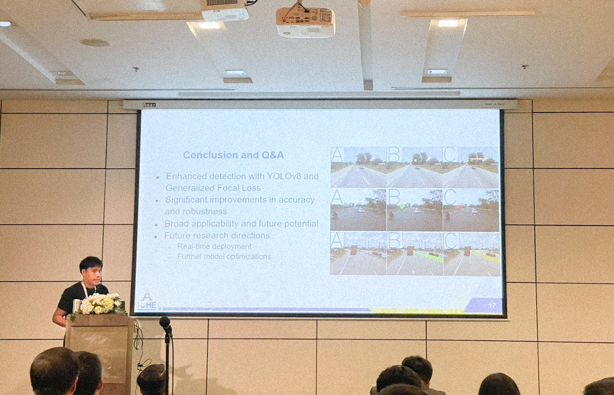
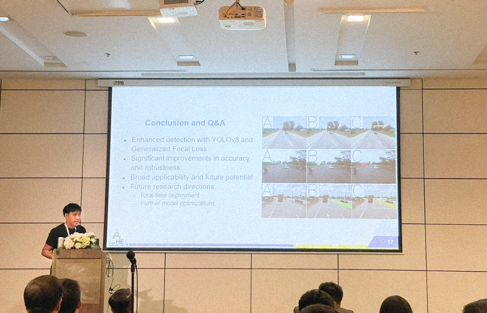
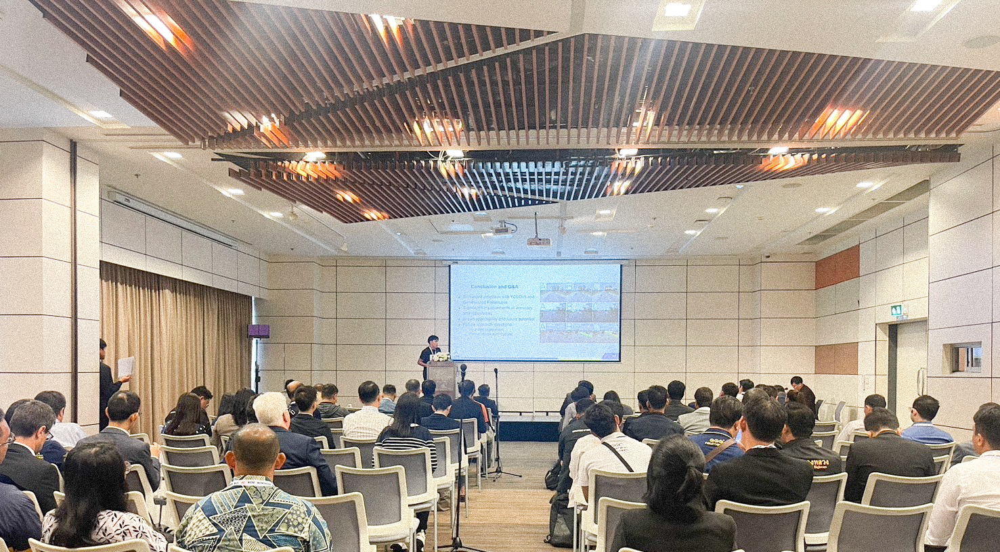
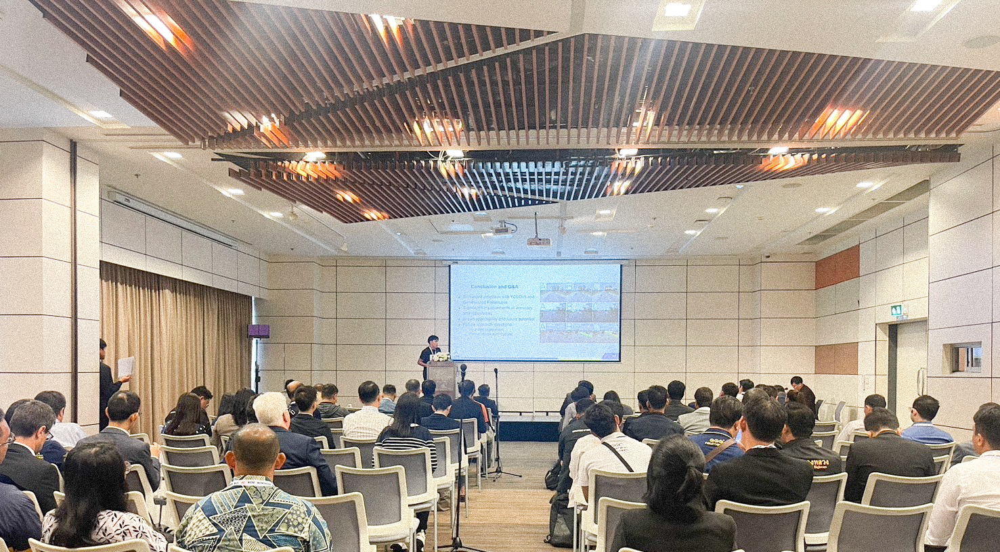

Enhanced YOLOv8-Based Object Detection of Road Assets Utilizing Generalized Focal Loss: A Case Study on Thai Highway Imagery

Abstract
This paper presents a comprehensive investigation into the object detection of critical road assets on Thai highways, employing an innovative approach that integrates an enhanced version of the YOLOv8 model with Generalized Focal Loss. Detecting pivotal road elements such as pavilions, pedestrian bridges, information signs, warning signs, and concrete guardrails is crucial for ensuring road safety and effective infrastructure management. Prior research in this domain has shown significant potential in deep learning-based object detection methods; however, the performance of conventional models often needs to improve in accurately identifying and localizing road assets under various conditions, including complex backgrounds and lighting variations. To address these challenges, this study presents integrating the YOLOv8 architecture with Generalized Focal Loss, aiming to enhance the model’s robustness and accuracy in detecting road assets. Our experimental results demonstrate the efficacy of the proposed method, showing significant improvements in detection metrics. The YOLOv8x model achieved the highest performance with mAP50 of 80.340, mAP50-95 of 60.840, precision of 79.100, recall of 76.680, and an F1-score of 77.870. These results highlight the superiority of the YOLOv8x model in comparison to other YOLOv8 variants. The study underscores the potential of advanced deep learning techniques in enhancing highway safety and infrastructure maintenance practices, particularly under challenging conditions such as complex backgrounds and varying lighting.
Exciting News: Oral Presentation at iCHE 2024!
I am thrilled to share that our paper titled “Enhanced YOLOv8-Based Object Detection of Road Assets Utilizing Generalized Focal Loss: A Case Study on Thai Highway Imagery” has been accepted for an oral presentation at the 5th International Conference on Highway Engineering (iCHE 2024)! After a long absence from international conferences since my Ph.D. studies, I’m incredibly excited to rejoin the academic community in person and present our latest research.
Dive into the complete details of our research on road asset detection in Thai highways with advanced vision models. Check out the full blog post here: Refined Generalized Focal Loss for Road Asset Detection
Stay tuned for updates, and a big thank you to my incredible research team:
N. Rattanachona, P. Thungthin, N. Subsompon, S. Thongbai, W. Wongweeranimit, and R. Phukham. I’m grateful for your hard work and dedication to this project!


Here I am, presenting our work on the Enhanced YOLOv8 model and its application in detecting road assets!
 

 


Paper Highlights:
Our research tackles a critical challenge in road safety and infrastructure management: detecting essential road assets such as pedestrian bridges, pavilions, signs, and concrete guardrails. We introduce an enhanced YOLOv8 model integrated with Generalized Focal Loss, which significantly improves detection accuracy, especially in complex environments with varied lighting and backgrounds.
The results speak for themselves:
- mAP50: 80.340
- mAP50-95: 60.840
- Precision: 79.100
- Recall: 76.680
- F1-Score: 77.870
These metrics highlight the robustness and precision of our method, underscoring its potential to enhance road safety initiatives.
What’s Next?
In addition to being featured in the conference proceedings, our paper will go through a fast-track formal review process for potential publication in the Transportmetrica A journal (published by Taylor and Francis). We’re hopeful that this work will make a meaningful contribution to the field of highway engineering and road asset management.

I look forward to sharing more about our research and connecting with fellow researchers at iCHE 2024!
Teerapong Panboonyuen
My research is focused on leveraging sophisticated AI techniques, specifically deep learning and computer vision, to enhance semantic understanding, pattern recognition, visual recognition, and geospatial data analysis.